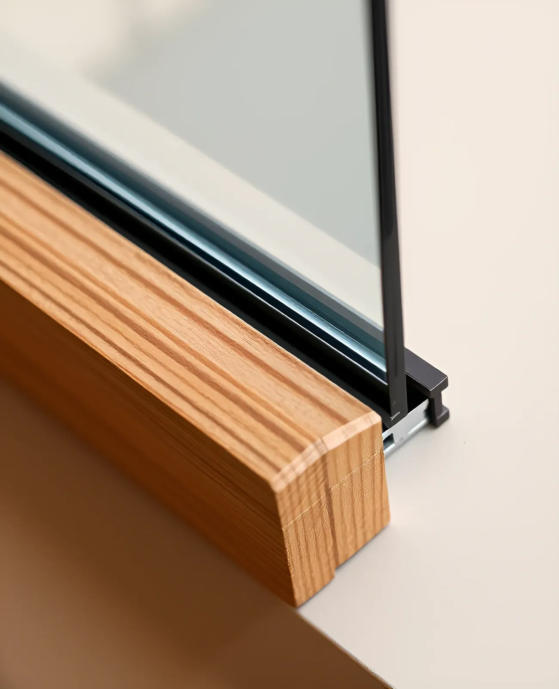

Telaro — windows and doors made in Porto
N°01Manifesto
We make windows and doors the way architects draw them: slim frames, exact joints and nothing between you and the view.

2009Founded in Porto
1 400Openings made a year
38 mmSlimmest visible frame
Collections
Ask for samples- 01OakSolid oak frames, oiled or lacquered, for windows, doors and pivots.Enquire
- 02Oak & BronzeWarm oak inside, bronze aluminium outside, no maintenance on the weather side.Enquire
- 03Steel LineSteel-look profiles with 38 mm sightlines and thermal breaks.Enquire
- 04Lift & SlideGlass panels up to six metres wide on flush, level thresholds.Enquire
Ateliers
Atelier PortoMon–Fri 9:00–18:00
Saturday by appointment
Rua do Exemplo 120
4000-000 Porto
Atelier LisbonTue–Sat 10:00–19:00
Site visits on request
Avenida Exemplo 45
1000-000 Lisboa
Write
to us
Tell us about the house, the openings and the light you want. An architect from the atelier answers every request within two working days.
Samples
Frame corners and finishes posted free within Europe.